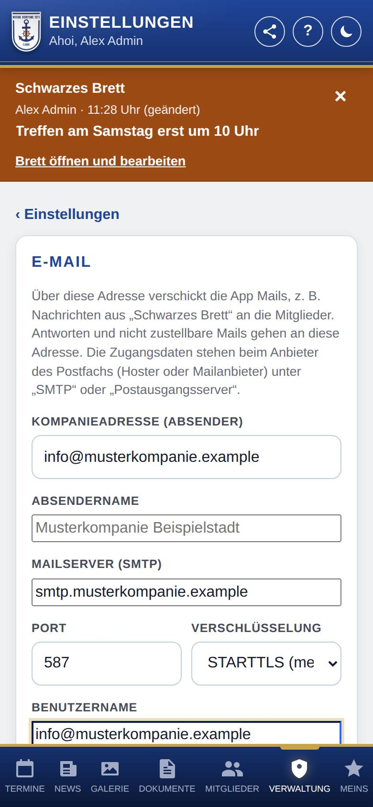

E-Mail einrichten
Hier trägst du die Kompanieadresse und den Mailserver ein. Darüber verschickt die App Mails, z. B. Nachrichten aus dem Bereich Schwarzes Brett an alle Mitglied. Ohne diese Angaben gibt es beim Schreiben am Brett keinen Haken E-Mail senden.

So öffnest du die Seite
Tippe unten auf Verwaltung, dann auf Einstellungen und auf E-Mail.
Was du hier siehst
- Kompanieadresse (Absender): die Adresse, von der die Mails kommen, z. B. info@… Antworten und nicht zustellbare Mails landen in diesem Postfach.
- Absendername: der Name, der als Absender erscheint. Bleibt das Feld leer, ist es der Name der Marinekompanie Lank.
- Mailserver (SMTP), Port, Verschlüsselung, Benutzername, Passwort: die Zugangsdaten zum Postausgang dieses Postfachs.
- Versand in Portionen: für Hoster, die nur eine bestimmte Zahl Mails pro Stunde erlauben.
- Verbindung prüfen und Testmail senden: erscheinen, sobald Adresse und Mailserver gespeichert sind.
- Darunter: wie groß eine Mail höchstens sein darf (wenn der Mailserver das meldet) und wie viele Mails noch auf den Versand warten.
So gehst du vor
Den Mailversand einrichten
- Trage die Kompanieadresse ein.
- Trage Mailserver (SMTP), Port und Verschlüsselung ein. Diese Angaben stehen beim Anbieter des Postfachs (Hoster oder Mailanbieter), meist unter „SMTP“ oder „Postausgangsserver“. Üblich sind Port 587 mit STARTTLS oder Port 465 mit SSL/TLS.
- Trage Benutzername (meist die Mailadresse) und Passwort des Postfachs ein.
- Tippe auf Speichern.
- Tippe auf Verbindung prüfen. Klappt es, steht dort, bis zu welcher Größe der Mailserver Mails annimmt.
- Tippe auf Testmail senden. Ohne Angabe geht sie an deine eigene Adresse; schau in deinem Postfach nach.
Den Versand in Portionen einstellen
- Tippe auf Versand in Portionen.
- Trage bei Mails je Portion ein, wie viele Mails die App auf einmal verschickt, und bei Pause (Minuten), wie lange sie danach wartet.
- Tippe auf Speichern.
0 bedeutet: alle auf einmal bzw. ohne Pause. So ist es am Anfang eingestellt.
Gut zu wissen
- Das Passwort zeigt die App nie wieder an. Lässt du das Feld leer, bleibt das gespeicherte Passwort.
- Die Mails verschickt die App im Hintergrund, jede einzeln an eine Person. Klappt eine Mail nicht, versucht sie es später noch einmal (bis zu fünfmal). Wer eine Nachricht am Brett schreibt, sieht im Verlauf, an wen sie ging.
- Jede Person kann Mails vom Brett unter Meins → Konto abschalten. Wer keine Mailadresse hat, bekommt keine Mail.
- Beim Versand in Portionen schaut die App alle 15 Minuten nach; eine Pause dauert deshalb mindestens bis zum nächsten Mal.
- Mailserver der Empfänger können kleinere Grenzen haben als euer eigener; abgelehnte Mails kommen als Rückläufer an die Kompanieadresse.
Für Fortgeschrittene: Die App verschickt über SMTP mit PHPMailer, in WordPress mit der Kopie, die WordPress mitbringt (nicht über wp_mail()). Die Höchstgröße liest sie aus der Antwort des Servers (SIZE nach RFC 1870).